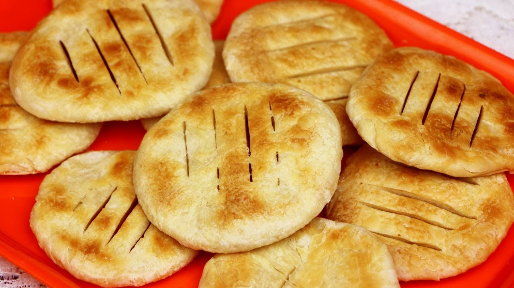
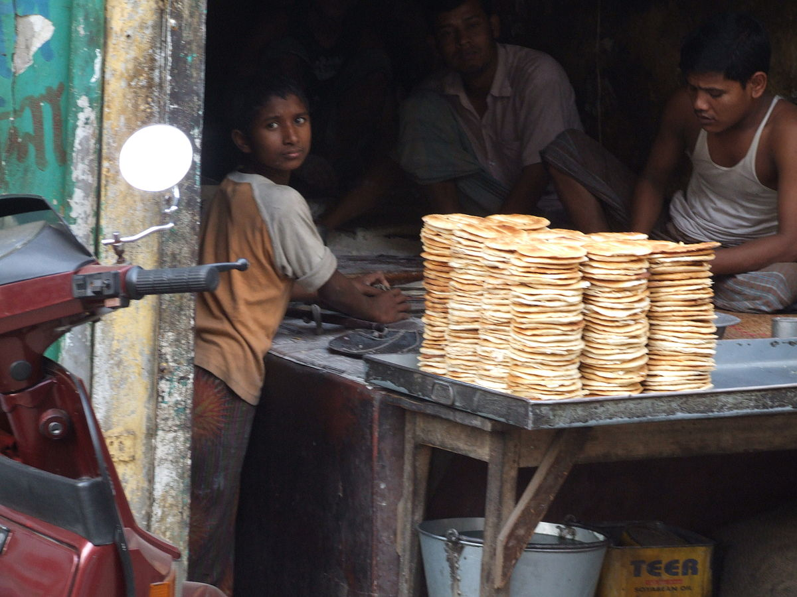
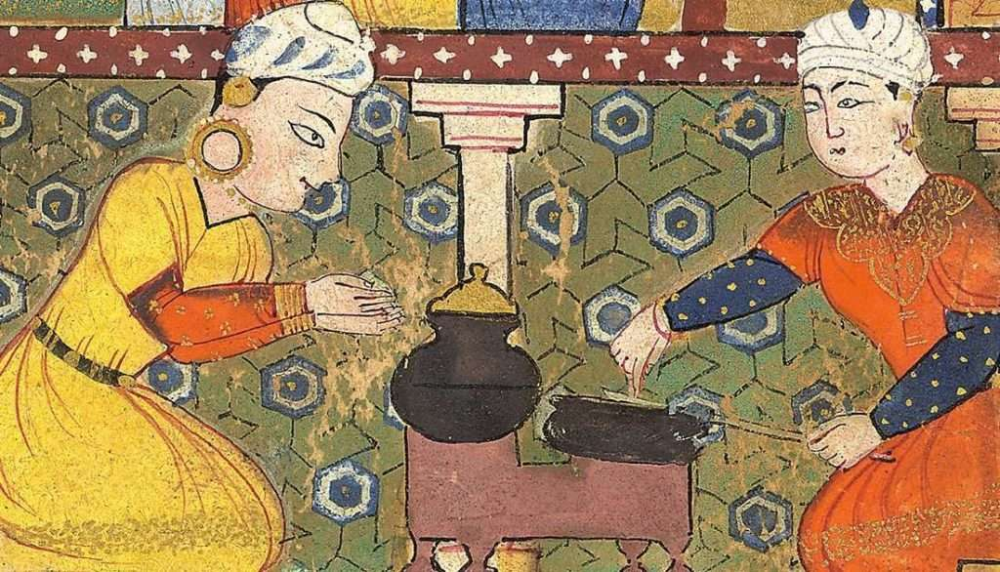
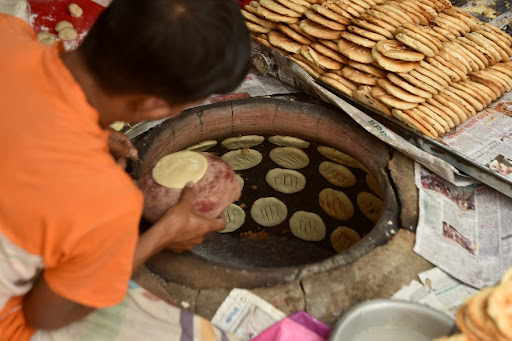
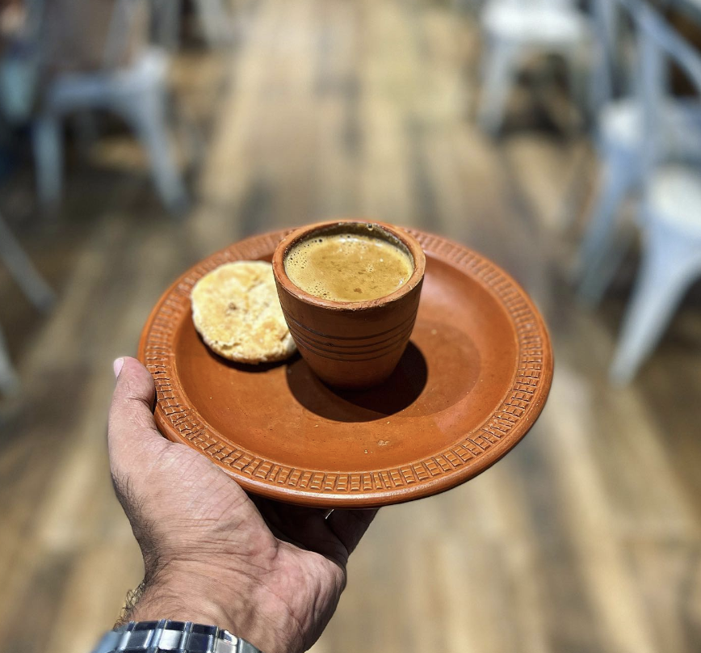

The finest dry flat-bread to touch our earth, Bakorkhani stands out as the most extraordinary gift that the Mughal era and Bangladesh have bequeathed to us.

Some random information.

A Bakorkhani shop in Old Dhaka represents a tradition that is present throughout the entire country of Bangladesh. This photo was taken in 31 January 2007

Bakorkhani has its origins in the Mughal era and has been an integral part of Bengali cuisine to the present day.

Bakorkhani is prepared by repeatedly stretching a sheet of dough before baking it on a tandoor or tawa girdle, resulting in its distinctive flavor.

Bakorkhani is the ideal everyday snack; each bite envelops you in a warm sense of coziness.